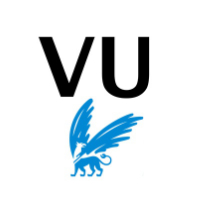

Education
 CS50 - Introduction to Computer Science
Research Master - Societal Resilience - Vrije Universiteit
One semester - 2020
 CS50 - Introduction to Computer Science
CS50 - Introduction to Computer Science
edX - Harvard, Online course
 Research Semester at the University of Queensland, Brisbane, Australia
Research Semester at the University of Queensland, Brisbane, Australia
Under the supervision of Dr Kristen Lyons, 2019-2020
Research paper available --> The Journey within Participation
BSc in Goesciences and Environment
Orientation Environmental Studies, University of Lausanne 2016-2019
Last semester was abroad at the University of Queensland
Bachelor Thesis avaialbe --> Discours de Durabilité du Global Ecovillage Network et justification, a priori, de son usage
BSc in Biology
One semester, University of Lausanne 2015
Passerelle DUBS
Bridging course for University - High School of Provences, Lausanne, 2014-2015
Professional Commercial Maturity
Commercial High School of Sion 2009-2013 + Internship 2014-2015
Senior Year
Western High School, Parma-MI-USA, 2010-2011